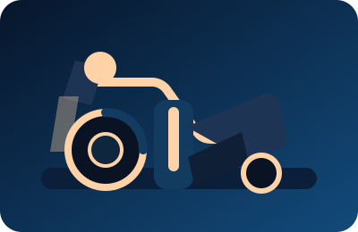
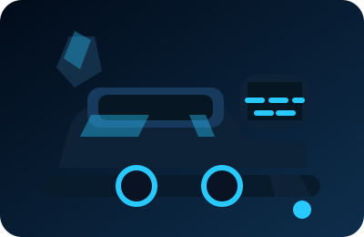
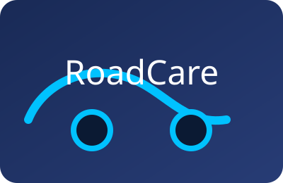

Компютърна диагностика
Специализиран софтуер за откриване на електронни неизправности, адаптации и калибриране на системи за безопасност.
🚗 Виби Транс 09 – Пловдив
🚛 От леки коли до тежки камиони – ние се грижим машината ти да е винаги готова за път!
🛠️ Мобилен сервиз – идваме на място при теб!
Съвременна сервизна зона с бързи линии за диагностика, климатична техника и подготовка за технически преглед. Всяка услуга се извършва с прозрачна комуникация и проследяване на ремонта в реално време.
Специализиран софтуер за откриване на електронни неизправности, адаптации и калибриране на системи за безопасност.
Висококачествени масла и филтри с гарантиран пробег и напомняне за следващо обслужване.

Сезонен монтаж, баланс и съхранение на гуми с прецизно измерване на геометрията.

Пълнене и ремонт на климатични системи, обслужване на електрически компоненти и високоволтови модули.
Финални проверки, подготовка на документация и съдействие при регистрация на специализирани превозни средства.
Екипи за мобилен отговор със сервизни камиони, генератори, заваръчна техника и дистанционно проследяване. Достигаме до вас в радиус от 250 км и работим директно на място.

Идентификация на грешки, ресет на модули и адаптации за всички основни електронни системи.

Мобилна заваръчна станция за шасита, въздушни възглавници и хидравлични системи на ремаркета и полуремаркета.

Хидравлични преси, подвижни подемници и баланс машини за гуми до 24 инча, както и сезонно съхранение.

Денонощен екип и постоянна връзка с диспечерски център за проследяване на статуса на всяка заявка.

Сертифицирани техници за поддръжка на температурни и изолационни системи на хладилни агрегати.

Профилактични графици, дигитални досиета и анализ на разходите за минимизиране на престоя.
Независимо дали сте собственик на лек автомобил или управлявате голям автопарк, екипът на Виби Транс 09 е готов да предложи персонализирано решение и денонощна подкрепа.
Виби Транс 09 е професионален автосервиз в Пловдив. Предлагаме пълна поддръжка на леки автомобили, бусове, камиони, влекачи, ремаркета и полуремаркета. Извършваме диагностика, ремонт на двигатели, ходова част, спирачки, масла и електроника, а мобилният ни сервиз идва на място, когато не можете да дойдете до нас.
Кукленско шосе 17, 4004 Пловдив
Сервиз и мобилен центърПон-Пет: 08:00 – 19:00
Събота: 09:00 – 17:00
Неделя: дежурен екип